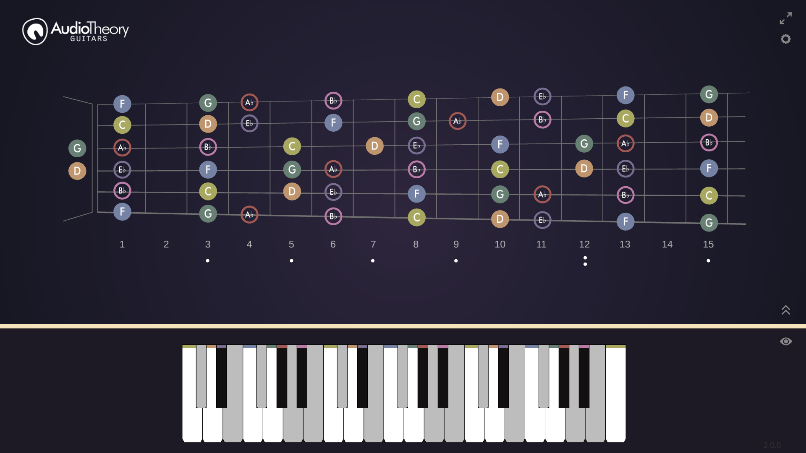

AudioTheory Guitars
Version 2.0.0
AudioTheory Guitars version 2.0.0 is here. This big new update coincides with the launch of
AudioTheory Piano Keys. It includes improvements to the note highlighting system that were originally developed for AudioTheory Piano Keys plus a whole bunch of extra features I'm excited to share with you.

A new look to celebrate
AudioTheory Guitars now has two additional themes you can select in the options. The classic theme is still the default however, so if you like things as they currently are you don't need to worry, not everyone likes change and that's okay.
Minimalist mode
You might notice something else different in the screenshots; they contain a lot less interface than usual. This is the new 'minimalist view' that can be toggled on or off using the eye icon on the right hand side of the screen. It's great for when you want to focus on practicing without the immediate need to change any settings. If you do need to adjust these, they're only a click away.
Chromatic highlighting
This is the culmination of numerous highlighting enhancements that have been made over the last few updates. The new chromatic highlighting options mean there is full flexibility on how sharp and flat notes highlight not only within a scale preset but also in chromatic mode (using all notes) as well as any custom subsection.
I am confident that this is a much improved solution for how to display sharp and flats. Firstly, two changes to how this previously worked:
- Sharp and flat notes now display with coloured highlighting even when a scale preset is not being used
- The previous sharp and flat settings in the options cog are no more
Sharps and flats now display as default as sharps. To change this all you need to do is click on any sharp note in the bottom left and it will swap to a flat. This will automatically update so the display and highlighting on the keyboard and fretboard match.
If you load a scale preset, this will automatically update all the sharp and flat notes so that they display as appropriate for the specific scale, but then they can be changed if desired by clicking on the names.
What this means is that in the majority of situations, the sharp and flat notes will automatically display in the format you'll want. And if you do want to swap one, it's really easy to do so.
New scale selector
The mini-scale selector has been neatened up, and there's a new look for the fullscreen selector. Minor scales have been split out into their own tab and there's now also a set of Dim scales available.
New octave selector
The octave selector has been revised to better match that of a real-world device. It now starts at 0 and can be increased to +1 or decreased to -1. There is also a new option in the settings to show the MIDI input octave directly in the main view. I'd recommend turning this on if you are using a MIDI device and frequently change the octave directly on the device. This (now labelled as 'input octave') should match the device to ensure highlighting works as expected.
For example: if you increase the octave by +1 on your MIDI controller, then you should set the input octave as +1 too as this will ensure the device continues to highlight the correct octave. Meanwhile the output octave independently sets the pitch of the application software instruments.
This update also includes some miscellaneous bug fixes and tweaks designed to make it the best version of AudioTheory Guitars yet. Highlights include:
- A new button on the scale selector for playback looping
- Lock to scale now defaults to 'Yes'
- Modal scale backgrounds now correctly update in the mini popup
- Sustain state now correctly saves
- The preset name cross no longer shows in some scenarios when a preset was not loaded
All updates are free for owners of AudioTheory Guitars. If you purchased directly then you can download the latest version from your Gumroad account.
For Steam users, new updates can be downloaded through the Steam client.
For new customers, you will be purchasing and downloading the latest version.
×